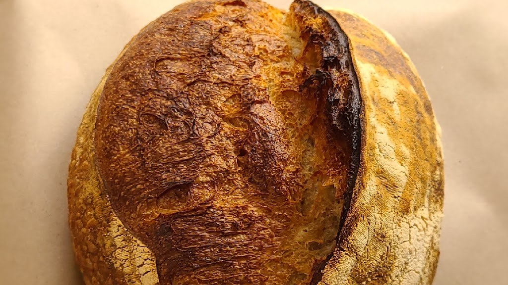
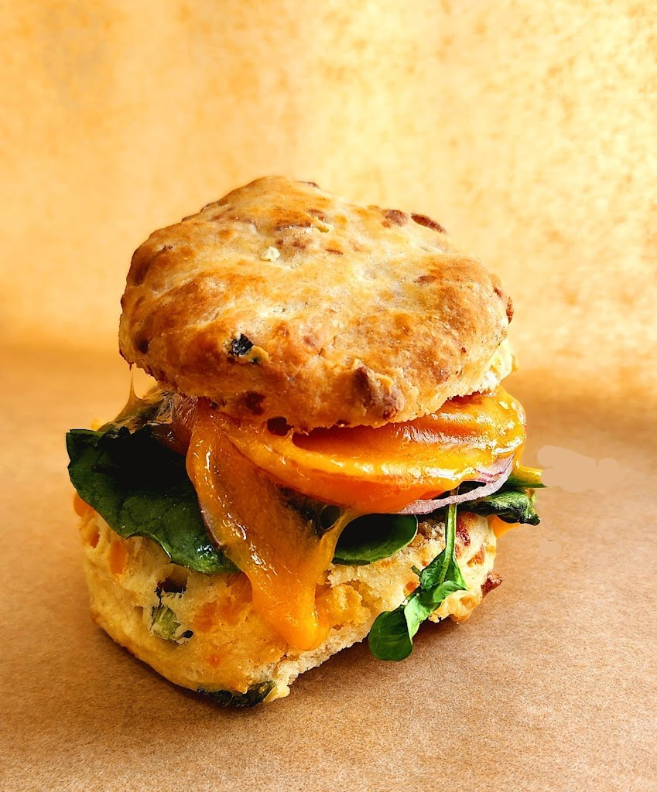
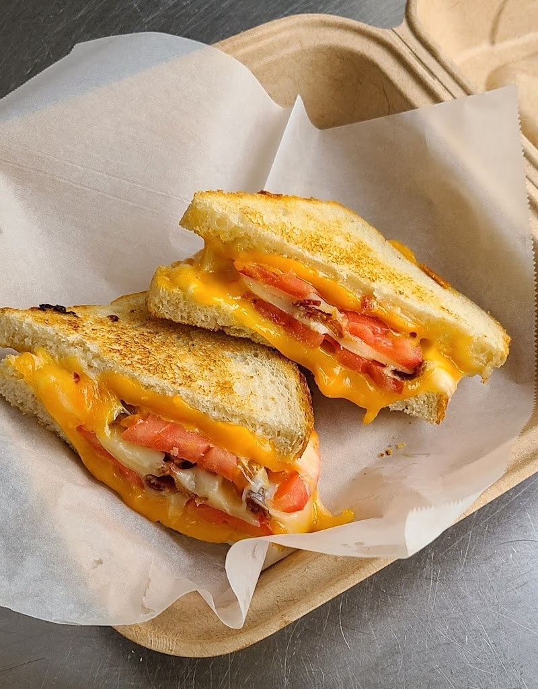

Artisan Bakery and Cafe, Asheville NC
City Bakery
A family-owned artisan bakery and cafe in Asheville since 1999, with artisan breads, breakfast, lunch, and coffee.

Bakery and cafe menu
Breakfast sandwich
Avocado toast
Cheddar-scallion biscuit
Lavender honey latte
Southwest turkey melt
Croissants
Cinnamon rolls
Bagels
Artisan breads
Artisan breads and pastries.
Breakfast and lunch
Breakfast and lunch, with coffee.
Sandwiches, soups, and salads
Sandwiches, soups, and salads.
Retail and wholesale
Retail and wholesale.
About
City Bakery is a family-owned artisan bakery and cafe at 88 Charlotte Street in Asheville, North Carolina, founded in 1999. The bakery serves artisan breads and pastries, breakfast and lunch, coffee, sandwiches, soups, and salads, for retail and wholesale. Hours are Monday through Saturday, 7:30 AM to 2:30 PM, and Sunday closed. Call (828) 254-4289 to ask about an order.
Retail and wholesale
City Bakery serves retail and wholesale customers. Call (828) 254-4289 to ask about an order.
Gallery


All three photos are the business's own public photos from its Google Maps listing. They show a round crusty sourdough loaf, a biscuit breakfast sandwich, and a grilled cheese sandwich with bacon.
Visit
Address: 88 Charlotte Street, Asheville, NC 28801
Hours: Monday through Saturday, 7:30 AM to 2:30 PM, and Sunday closed.
Phone: (828) 254-4289
Contact
City Bakery serves Asheville, NC. Questions? Call (828) 254-4289.